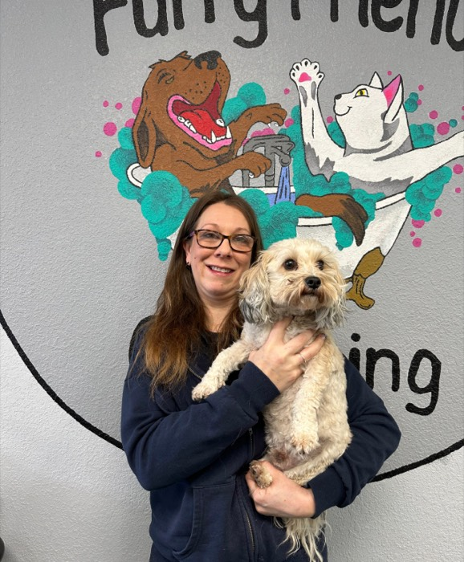
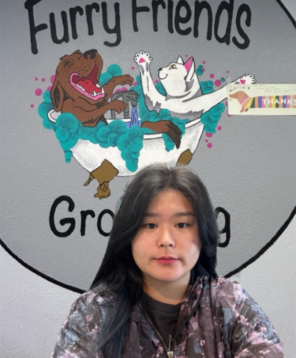
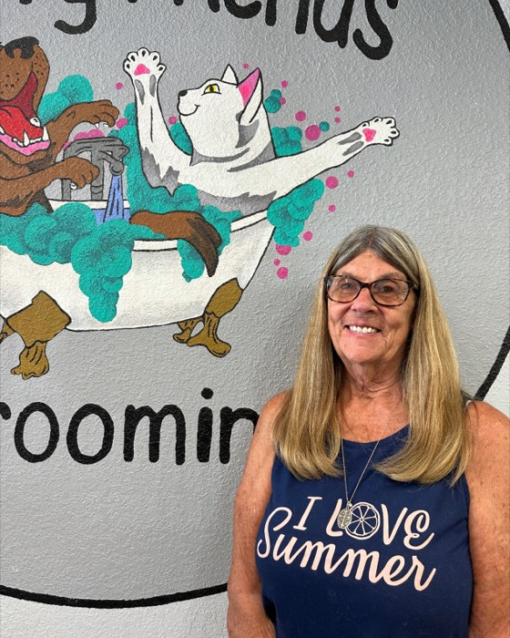
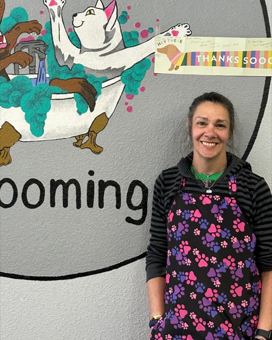
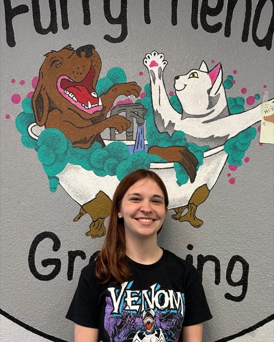
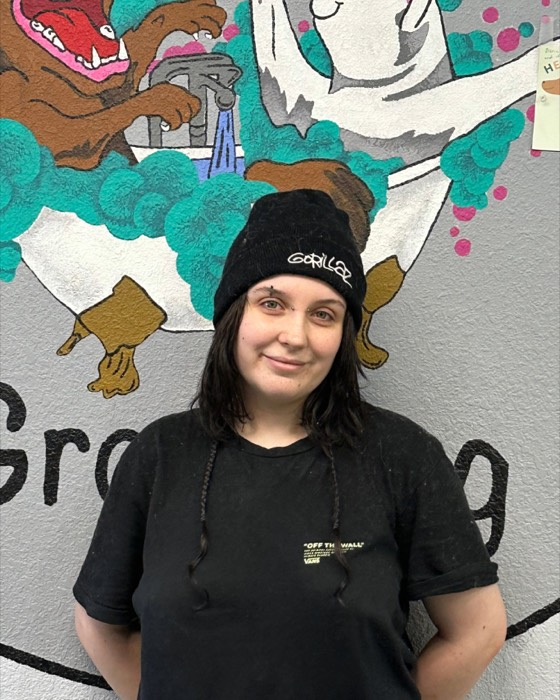
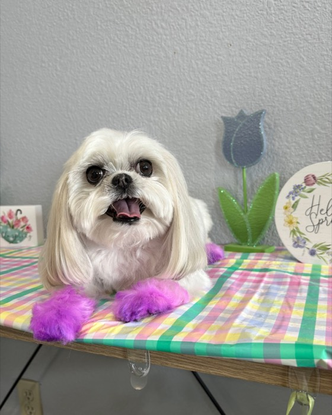
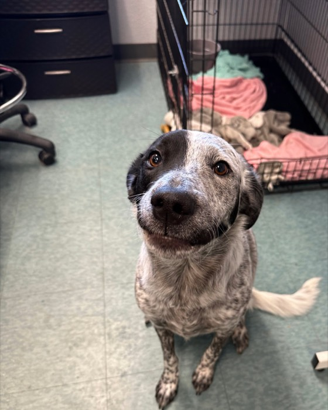
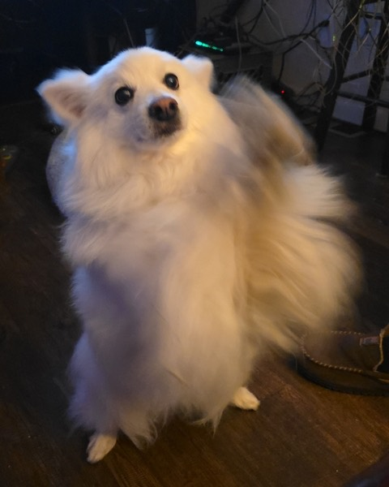
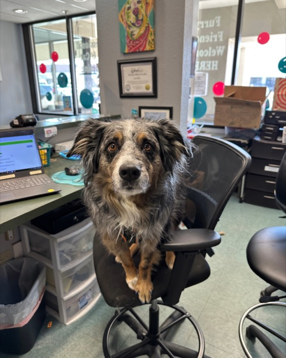

Jen
Certified pet groomer / salon manager
Started grooming in 2006. Has a soft spot for Chihuahuas, and spends free time hiking and camping with her family.
Home / Our team
It takes a special set of skills to help pets look and feel their best. Our trained pet stylists have a combined 32 years of experience, and we keep learning, in person and online, to stay current with new techniques and styles.

Owner & certified pet groomer
I’ve owned Furry Friends Grooming since July 2017 and have been grooming dogs and cats since 2012. I’ve done my best to assemble a team as passionate about animals as I am, and I’m dedicated to educating my staff and keeping them in a positive environment, so they can better serve you and your pets.
I’ve always loved working with animals, and after growing tired of call center jobs I decided to follow my passion. I began grooming in 2012 after completing grooming school in Loveland, and in 2017 I became the proud owner of Furry Friends.
A whole zoo: 3 dogs (Libby, Hershey and Neem), 4 cats, 2 aquariums and 2 tarantulas!
I love all of my clients, but if I had to pick: Golden Retrievers, for their goofy, eager-to-please personalities, and cats, because I love cats!
The crew

Certified pet groomer / salon manager
Started grooming in 2006. Has a soft spot for Chihuahuas, and spends free time hiking and camping with her family.

Certified pet groomer
Started working with pets in 2023 and has always felt at ease around animals. Loves grooming Shih Tzus: tiny, charming and a little sassy.

Receptionist
Her dog was a Furry Friends client for years. One day she asked if we needed a receptionist; over five years later she still loves every minute.

Certified pet bather
Started in 2020 out of love for animals, especially dogs. Loves pit bulls and shepherds, but it’s really all about personality.

Certified pet bather
Started working with pets in 2025. Can’t get enough of Australian Shepherds and their big personalities.

Bather
Used to bring her own dog in for nail trims, walked in at the right time and asked about a job. Loves big, loving Newfoundlands.
The heart and soul of the salon
Whether they’re greeting guests at the door or napping between appointments, they fill our days with unconditional love and remind us why we do what we do.

HR Paw-fessional

Director of Paw-fessional Relations

Secretary of Snuggles

Director of Pawsitivity